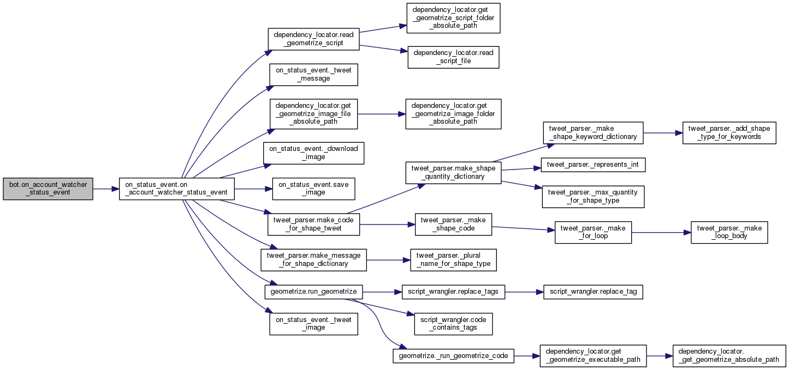
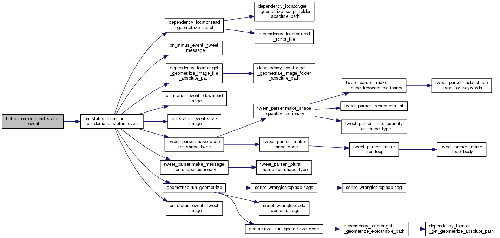

|
GeometrizeTwitterBot
1.0
Python Twitter bot for geometrizing images into geometric primitives
|
|
GeometrizeTwitterBot
1.0
Python Twitter bot for geometrizing images into geometric primitives
|
Module that sets up the Geometrize Twitter bot. More...
Functions | |
| def | on_connect |
| Callback triggered when the stream listener connects. More... | |
| def | on_timeout |
| Callback triggered when the stream listener times out. More... | |
| def | on_error |
| Callback triggered when the listener encounters an error. More... | |
| def | on_on_demand_status_event |
| Callback triggered when the stream listener for the Geometrize bot account reports a status event. More... | |
| def | on_account_watcher_status_event |
| Callback triggered when the stream listener for tracking specific Twitter accounts reports a status event. More... | |
| def | on_on_demand_filter_setup |
| Callback triggered when setting up the stream filter for tracking the Geometrize bot account. More... | |
| def | on_account_watcher_filter_setup |
| Callback triggered when setting up the stream filter for tracking specific Twitter accounts. More... | |
Variables | |
| tuple | tweepy_auth = tweepy.OAuthHandler(config.OAUTH_CONSUMER_KEY, config.OAUTH_CONSUMER_SECRET) |
| tuple | tweepy_api = tweepy.API(tweepy_auth) |
| tuple | on_demand_bot |
| tuple | account_watcher_bot |
Module that sets up the Geometrize Twitter bot.
Invoke this script to run the bot i.e. "python bot.py".
| def bot.on_account_watcher_filter_setup | ( | stream | ) |
Callback triggered when setting up the stream filter for tracking specific Twitter accounts.
| def bot.on_account_watcher_status_event | ( | api, | |
| status | |||
| ) |
Callback triggered when the stream listener for tracking specific Twitter accounts reports a status event.

| def bot.on_connect | ( | api | ) |
Callback triggered when the stream listener connects.
| def bot.on_error | ( | api, | |
| code | |||
| ) |
Callback triggered when the listener encounters an error.
| def bot.on_on_demand_filter_setup | ( | stream | ) |
Callback triggered when setting up the stream filter for tracking the Geometrize bot account.
| def bot.on_on_demand_status_event | ( | api, | |
| status | |||
| ) |
Callback triggered when the stream listener for the Geometrize bot account reports a status event.

| def bot.on_timeout | ( | api | ) |
Callback triggered when the stream listener times out.
| tuple bot.account_watcher_bot |
| tuple bot.on_demand_bot |
| tuple bot.tweepy_api = tweepy.API(tweepy_auth) |
| tuple bot.tweepy_auth = tweepy.OAuthHandler(config.OAUTH_CONSUMER_KEY, config.OAUTH_CONSUMER_SECRET) |
 1.8.6
1.8.6